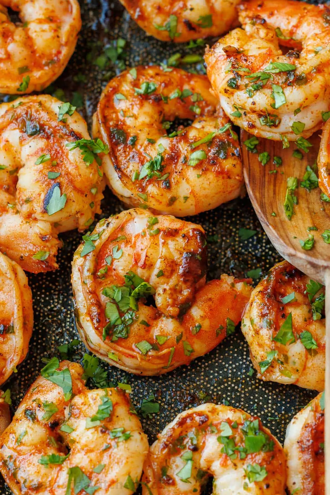

Cilantro-Lime Shrimp
- Total time15 mins
- Serves4
- Ingredients10
- Steps4

Ingredients
- 1 lb large shrimp, 21-25 ct, peeled and deveined (See note above)
- 2 Tbsp extra virgin olive oil, divided
- 1 Tbsp lime juice, plus more to serve
- 1 Tbsp cilantro, finely chopped, plus more to serve
- 1 garlic clove, finely minced
- 1/4 tsp fine sea salt, plus more to taste
- 1/4 tsp freshly ground black pepper
- 1/2 tsp ground paprika
- 1/2 Tbsp honey
- 1 lime, cut into wedges for serving, optional
Directions
- In a bowl, combine 1 Tbsp olive oil, lime juice, cilantro, garlic, salt, pepper, paprika, and honey, and stir together to combine. Add the shrimp and stir to coat.
- To Sauté: Preheat a large non-stick, non-reactive skillet over medium/high heat. Add 1 Tbsp oil to the pan and once the pan is hot, add the shrimp in a single layer and sauté for 1-2 minutes per side or just until cooked through.
- To Grill the Shrimp: Start by preheating the grill to medium/high heat and soak wooden skewers for 10 minutes to ensure they won’t burn on the grill. Oil the grates to prevent sticking. Combine the shrimp with the marinade then skewer them. Grill for 1-2 minutes per side or just until cooked through.
- Season with salt and pepper to taste, and then immediately transfer the shrimp to a serving dish to prevent overcooking. Garnish with more cilantro if desired and serve with lime wedges for squeezing.
Recipe credit: natashaskitchen.com